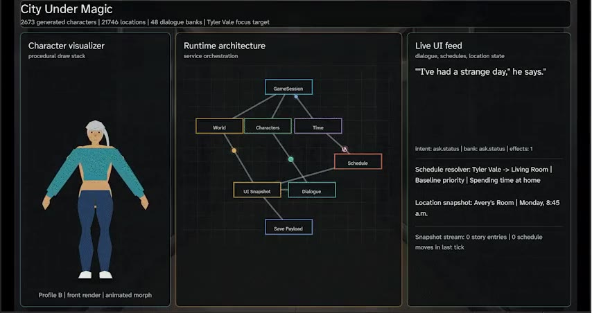

City Under Magic
A systems-driven life simulation and visual novel built in Godot. The case study covers procedural population generation, NPC memory and dialogue context, genetic inheritance, custom page rendering, and incremental saving.